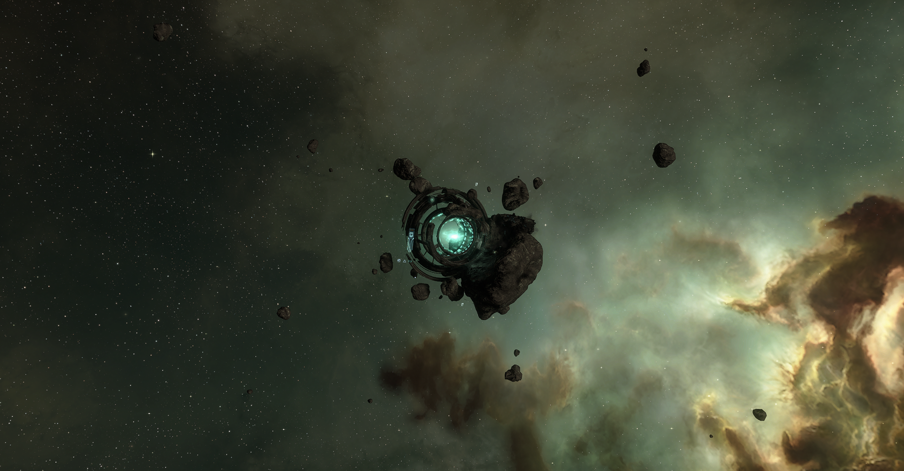

Docking bay 2K30606R
Jita 4-4, Jita, Kimotoro, The Forge
The beating heart of New Eden.
This is where the voyage begins.
Editor's note:
On the left, you will follow the journal of a voyager, taken during the Sightseeing on the path of Katia Sae, Mild Thrill Experience.
On the right, you will follow the host for the Sightseeing on the Path of Katia Sae, Mild Thrill Experience, Alena Eveymon.

Homeworld: Trosquesere III
Her favourite stop: Katia Sae Monument
Born in the forests of Trosquesere III, she had a knack for remembering facts and readying history books. Her passions lead her to the University of Caille where she pursued a degree in Contemporary History of the Four Empires.
She has plenty of facts and curiosities of the four Empires to guide our guests through High Security space and Low Security space in the Safe Thrill and Mild Thrill Experiences.
The shuttle sat silently on its berth. The hull was a Caldari standard design, but it had been modified by Sawa Laboratories crews to provide a better view from the passengers’ compartment with floor to ceiling viewports, extra comfort seats and advanced projector technology. The livery was dark but for a pair of orange stripes, inconspicuous and simple.
The crew was preparing it for the upcoming trip. The last supplies were loaded and the cleaning crews left the ship interiors in pristine conditions. Everything was ready to welcome the guests aboard.
The Voyage could begin.
System: Jita
Constellation: Kimotoro
Region: The Forge
Security Status: 0.9
I bit the leaf. I signed up for the Mild Thrill Experience.
They assured me it’s rather safe, for being Low Security space, that is. They told me the voyage had been organised to avoid hot spots and prime times so we should be safe.
I’m still somewhat queasy but they seem to know what they are doing and still… isn’t it exciting to be able to say “I dipped into Low Sec”?!
Aside from the fact that the stops are very very interesting.
Anyway, we are boarding and, as before, I already feel pampered and all. Nice!
And we are on our way! The Voyage has officially began!
"Welcome everyone! New Eden Voyages is happy to welcome you on board the NEV Voyager I."
"My name is Alena and I'll be your host for this voyage. Be ready to be amazed and have an experience that you won't forget!"
"We are preparing to leave Jita 4-4 and we will be soon on our way. While we wait, I and the whole crew would like to wish you a pleasant stay."
"If you have any question or concern, please reach out to our staff, we will be happy to help."

Once everyone was on board and the ship was sealed, the shuttle began its undocking operations. It slowly rose from its berth before it headed for the busy access corridor. The movements were smooth and the guests barely felt the change of vibrations under their feet.
Refreshments were distributed but many gasped and turned in awe as they exited the massive station. They were right in the thick of the crowded space around Jita 4-4, and massive ships, from cargo to battle ones, loomed over the shuttle as it sped away, heading for the Perimeter gate.
System: Old Man Star
Constellation: Vieres
Region: Essence
Security Status: 0.3
Stargates are rather standardized, depending on who built them, they have this or that shape, that’s it. If you travel a bit you get to know them.
Old Man Star, however, is a rather cool looking stargate: built into the side of an asteroid, it has an organic feel and look, it feels like it grew from the rock, like a plant.
Also, I’m not sure I could survive Darieux’s adventure, if you can call it adventure. I’d go nuts sooner! But kudos to his perseverance and will of still.
Next stop Mozzidit!
"Dear guests, we just entered the Old Man Star system and we are en route to the Old Man Star – Villore stargate."
"The stargate born from disaster and human perseverance. That’s the origin of the Old Man Star gate connecting this system, once named Ouperia, to its neighbour Villore."
"The story of this system is the story of Ceul ‘Old Man’ Darieux, a drone operator, that, in a unique feat, managed to survive a deadly crash and build the fully functioning stargate you see now."
"Sent toward Ouperia in YC11 to build a stargate to Villore, his ship crashed due to a jump drive miscalculation. The story could have ended there, if Ceul Darieux hadn’t survived. It took him 44 years to finally reach the system and a few more years to complete his mission."
"As a now old and frail man but with plenty of knowledge on drones, his only friends during his long voyage, Ceul Darieux went on to enstablish CreoDron and enter history. Not for nothing, the system is now called Old Man Star."



The shuttle orbited the unique stargate a few times, before it lined up and prepared to warp. The light turned green as they neared the energy field of the gate and, in a blink, they jumped, heading for Villore.
As they entered a longer leg of the Voyage, it was time for the first full meal. Guests took their seats, and lunch was served. For this lunch, the starred Chef focused on Amarrian and Gallentean cuisines, building a mix of flavours that called for the ancient times of New Eden and spoke of the history of the systems they flew through.
The shuttle sped through system after system, the green hues soon giving space to the golden tints of Genesis. It only paused for a brief moment in Imiya, just before heading into the Monalaz constellation.
System: Mozzidit
Constellation: Monalaz
Region: Genesis
Security Status: 0.3
Also, second time into low security space! We first dipped into it when stopping at Old Man Star but now we are having our longest leg below 0.5 security status!
I keep glancing outside fearful of seeing a toothed ship jumping on us but apparently there isn’t much traffic at this time and the sailing is smooth.
Anyway, we just landed at our next stop. It’s a neat colony hanging on a golden background.
While I understand its position in the lore of New Eden, there isn’t much to see. Probably the blandest stop of both tours, but hey, good stuff is coming!
Next stop Dead End!
"Dear guests, we just entered the Mozzidit system and we are en route to the EVE Travel Agency."
"A precursor and inspiration behind New Eden Voyages and many other explorers, such as Katia Sae herself, the EVE Travel Agency was founded by Mark726, a capsuleer born in this very system."
"In more than ten years, he explored and documented nearly two hundred sights around the cluster before coming back here, where it all started, and establishing the EVE Travel Agency."

It was indeed rather simple: a few buildings floating in space. The weight was in what the founder had done more than the physical shape of the agency. The shuttle orbited the installation a few times before it lined up and sped up toward Djimame.
Gate after gate, the excitement in the passenger compartment grew: the EVE Gate were growing closer and closer. Refreshments were served one last time before they headed even deeper.
System: Dead End
Constellation: EVE
Region: Genesis
Security Status: 0.2
A dead end system called Dead End. Sounds good.
A rectangular shape hanging in space. Just there. It reflects the golden light of the star and the nebula but other than that… it’s just there.
We couldn’t get close due to the presence of pirates so we had to rely on projectors to see it up close but I think they have better hardware than my home projector cause I felt quite real.
It’s so smooth… and reflecting… I cannot but wonder who built it, why they built it, why in Dead End of all places!
And it’s full of stars… could that it be that it reflects all its surroundings?
Questions… so many questions.
Next stop the EVE Gate!
"Dear guests, we just entered the Dead End system and we are en route to the Monolith."
"The Monolith. A perfect 1:4:9 rectangular structure. Smooth, reflective and devoid of any external marks or defects. Unique in the whole cluster, many have investigated it and yet nothing had been uncovered."
"We just know it exists. What is its purpose? Who built it? We don’t know. We only know that “It’s full of stars”."
This time the shuttle didn’t get close to the stop. It hovered a few hundreds kilometres away from the Monolith, letting the holoprojector technology and camera drones given the guests the feeling they were only mere metres from it. With a cluster of pirates hanging close to the Monolith, it was too dangerous to get any closer.
Once the time is up, the Monolith fell way behind, as they headed for Central Point and the main dish of the whole voyage.
System: New Eden
Constellation: EVE
Region: Genesis
Security Status: 0.3
You can’t believe till you see it.
The EVE Gate are… massive.
This huge, wormhole like thing fills the horizon, wherever you are in the system. And it’s alive! You can see it breath, breathing light that is, but it feels like breathing: it inhales, dimming in light, and exhales with a flare of light.
Being so massive, seeing it collapse up close must have been apocalyptic… not to mention what it did to the rest of New Eden.
I’m in awe: this is the door our ancestors used to come into New Eden. This is where it all began.
The EVE Gate.
Next stop Gererique!
"Dear guests, we just entered the New Eden system and we are en route to the EVE Gate."
"The EVE Gate."
"This is where it all started. This is where the first human colonists came through and stepped into New Eden, changing history forever and unleashing a wave of colonization that reached for the furthest reaches of the cluster."
"For some it’s just a natural phenomenon, an unique wormhole that had collapsed, for others it has a religious connotation, representing a gift from God itself."
"For whatever reason, the EVE Gate have become a must-do pilgrimage for Capsuleers and citizens alike."
A view like none in all New Eden. There were many monuments but there was only one EVE Gate. The guests were in awe as soon as they entered the system and their awe only grew as they sat in the quietness of space, not far from the Sisters of EVE Research station. The EVE Gate filled the viewports completely, it shed light like no other star and everyone felt the weight of it all. The EVE Gate.
The shuttle hung a little longer around the EVE Gate, letting the guests enjoy the sight, as the system was quiet and there was no rush. When everyone’s eyes were full of the flowing light, then and only then, the shuttle headed for the way it had come, warping toward the Promised Land system.
Refreshments were once again served and the excitement grew more subdued as the light of the EVE Gate faded and became a memory. More than a few of guests held their breath as they briefly crossed a few system with below 0 security status but the crossing was smooth and uneventful.
System: Gererique
Constellation: Orvanne
Region: Solitude
Security Status: 0.7
Below 0! We went below 0! Only for a few systems but we went below 0 sec. Anything happened? Not really. It was cool and quiet.
So much purple!
It’s like a huge purple streak in the sky with a few scattered blue dots in there. And apparently it’s a field of black holes! But whatever it is, it looks… unique and cool.
Aren’t the people on this little station be fearful of being sucked into them?
Next stop Jita 4-4!
"Dear guests, we just entered the Gererique system and we are en route to the Duvolle Laboratories corporate research facility."
"The Trace Cosmos, one of New Eden’s wonders, is a unique spatial phenomena. The field of purples, blues and pinks you see is a field of miniscule black holes and weird spatial rifts. Gererique is the only system close enough to make it visible to the naked eye."
"The Duvolle Laboratories corporate research facility is no resort but a top of the line research installation with its eyes set on the Trace Cosmos. However, we are yet to understand the complete nature of the Trace Cosmos."
The shuttle landed a few kilometres from the research installation and cruised silently past it, letting the guests enjoys an unbroken sight of such unique cosmic anomaly.
As the shuttle turned and headed back on the way they had come, they entered the longest leg of the whole trip. Guests relaxed and chatted, some napped, but soon enough, dinner came. Once again, the chef had worked hard to build a set of dishes that complemented their voyage, mixing together cuisines and tastes, making the dining experience just as good and particular as the sights outside the viewports.
Outside the shuttle, the hues of New Eden replayed backwards: green and gold, green and blue. The longest leg was also the sum of all the other parts, carrying them backwards through the same regions they had passed through on their way forward.
The closer the shuttle got to Jita, the greater the traffic become. The waits at the gates lengthened but also came the realisation that their voyage was soon to end. Jita 4-4 appeared on the horizon and that was their arrival station.
System: Jita
Constellation: Kimotoro
Region: The Forge
Security Status: 0.9
Now now. We are in sight of Jita 4-4 and so that means the voyage is at its end.
Already. Boooo.
Not the first time anymore but Jita 4-4 and its traffic is still impressive.
What to say? They are two different experiences. The Safe Thrill is truly relaxing, you fly around New Eden, eat great food and chill. This one keeps you on the edge of the seat much more, we saw pirates at a few hundred kilometres from us! We were so close! But otherwise, it felt safe, we didn’t encounter much traffic once we left are around Jita.
The food was once again great.
I would say I would do it again, if nothing else to visit the EVE Gate again. But I would like to stay at the Sister’s of EvE station for a few days, to contemplate it.
I was told they have a Maximum Thrill Experience but that might be out of my league. I’ll give it a thought but no promises.
Until then,
see you.
~The Voyager
"Dear guests, we are nearing Jita 4-4. As you can see, the traffic around the greatest station of the whole cluster is thick. Jita 4-4 is renowed as the main market hub and, as such, it attracts people from all over New Eden.
"In its corridor, you will be able to find the most faithful of Amarrian side by side with the flashiest Gallente. Caldari business man trading with Minmatar clan representatives and through it all, the Capsuleers, immortals in a mortal world. Not for nothing, Jita 4-4 is sometimes called the beating heart of New Eden."
"As we enter the station itself, I am sad to announce that we are at the end of our Voyage. We hope you had a pleasant Voyage and New Eden Voyages hopes to see you again soon.""
"If you need more information on The Sightseeing on the path of Katia Sae or other offerings by New Eden Voyages, please, reach out to our ground staff. They will be happy to answer each and every one of your questions."
"I’m your host, Alena, and I wish you a safe continuation of your journey."
~The Host, Alena Eveymon